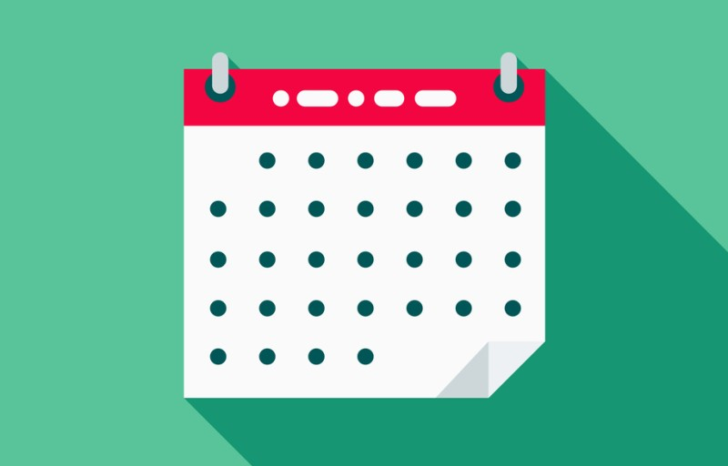

¿Qué es aprender a aprender?
Aprender a aprender es una idea realizada por estudiantes de la Universidad Tecnológica de Tula Tepejí, y consta de herramientas que ya existen pero que aquí te vamos a enseñar usarlas de manera correcta para que tu aprendas de forma autodidacta.
Lo primero que debes saber es que lo que aprendas dependera arduamente y solo de ti, de tu constancia y fuerza de voluntad para no detenerte y seguir adelante, los únicos requisitos que necesitas para empezar es la fuerza de voluntad, que evidentente te trajo aquí.
Técnicas a usar
- Técnica de Pomodoro
- Repaso Espaciado
- Técnica de Feyman

Técnica Pomodoro
Esta técnica consiste de elegir una tarea o actividad a realizar (en este caso estudiar o aprender) y sirve para administrar tu tiempo dejando que tu cerebro descance sin acumular estres y a su vez aprender.
Consta de un ciclo de estudio, recomendamos que mientras estes en el tiempo de estudio no te distraigas y te concentres en ese tiempo.
- Estudiar durante 25minutos
- Terminando ese tiempo descansa durante 5min.
- Vuelve a estudiar durante 25min.
- Descansa 5min
- Si puedes aplica lo que aprendiste durante 25min
- Descansa de 15min a 30min segun tu consideres
- Repasa por 10min.
- Finalizaste un pomodoro ahora vuelve a aplicar cuantas veces quieras
Herramienta a usar:
Para que apliques esta técnica te recomendamos usar el temporizador que el quipo de Aprender a aprender a desarrollado
Repaso Espaciado
Esta tecnica consta de repasar cada determinado tiempo, para reducir la probabilidad de perder el conocimiento adquirido en nuestra memoria.
| Aprendes | Probabilidad |
|---|---|
| Estudias | 90% |
| Repasas 24hrs despúes | 70% |
| Repasas 1 semana despúes | 50% |
| Repasas 1 mes despúes | 10% |
Herramienta a usar
Para que apliques está técnica de manera efectiva el equipo de Aprender a aprender desarrollo para ti un calendario en el que podras asignarte a ti mismo tu rutina de aprendizaje.
Recomendacion: Trata de ponerte recordatorios segun la tabla mostrada, con esto un tema lo estaras repasando, 24hrs despues, 1 semana despues y finalmente 1 mes despues para que no pierdas lo que aprendiste de tu memoria. Técnica de Feyman
Consta de un par de pasos
- Elegir que enseñar o que aprender
- Revisar y aprender diariamente
- Enseñarlo
- Recapitular y cerrar brechas

Herramienta recomendada
Finalmente contamos con una herramienta que se encuentra en el apartado de "Mis tareas" y esta te servira para organizar los temas que debes estudiar ya que antes de aprender algo debes saber primero que lo conforma(temas, subtemas, aplicaciones, etc...) y todo eso lo podras estructurar en esta herramienta, además de que tendrás una mejor organización y poco a poco serás más constante.
Recomendacion:El equipo de Aprender a aprender te recomienda enseñar mediante videotutoriales, clases presenciales o clases individuales, puede ser con amigos, familia, vecinos o cualquier persona interesada lo que estes aprendiendo ya que así reforzaras el conocimiento adquirido.